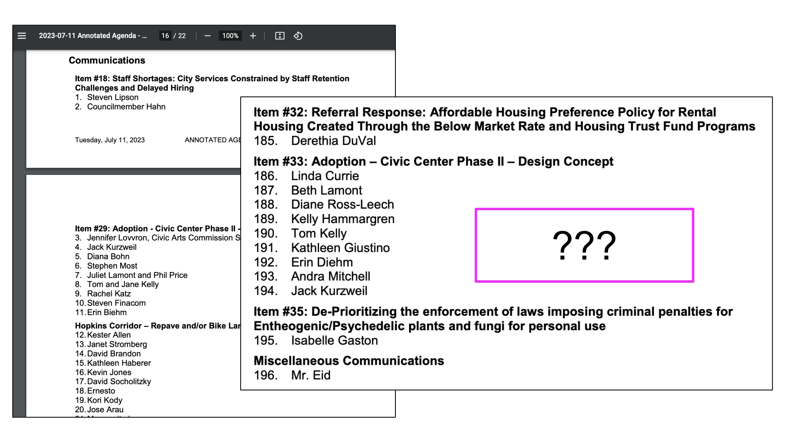

pubcomm
Description and Process Summary
This project uses AI to summarize and code letters to city council from the public to provide an aggregated view of public sentiment on local issues.
This project was designed to make it easier for journalists to understand public sentiment as expressed in letters written to a city government. As local issues can garner tens or hundreds of letters, and local journalism is seldom well-resourced, automation could be key in delivering timely and accurate reporting to the public.
In this project, PDF letters and emails are (1) turned into text, (2) summarized with AI, and (3) coded for whether they express support or opposition to an issue, also with AI.
Context
About City Council Meetings and Public Comment
The Berkeley City Council meets at least twice a month. These meetings are typically five hours long.
The City Council invites members of the public to comment for up to 2 minutes at the beginning of a meeting, at the end of a meeting, and after agenda action items are called. There are many community members who show up to express their position on council agenda items, some staying nearly the entire five hours before providing public comment.
There are also many who would be civically engaged but are unable to attend or who can only attend for part of the meeting. These meetings are held on Tuesday evenings – school nights – making it all the more challenging for youth and parents of young children to participate.
For example, at a recent July meeting community members provided live public comment 87 times. At the end of the meeting a councilmember stated that there were youth in attendance who she knew wanted to speak on an issue but needed to leave before their agenda item was called.
About Written Communications
The City Council acknowledges that the length and format of public meetings present barriers to civic engagement. It even periodically convenes meetings to discuss specifically how to mitigate those barriers.
One alternative to live attendance: public comment in writing, emailed in advance to the city clerk for the council’s consideration and inclusion in the public record.
At this same mid-July meeting, 196 people emailed to share their support for or opposition to upcoming agenda items. These emails cumulatively span 336 pages of PDF.
The content of these written communications is presented en masse in the agenda as an enumerated list of people and item numbers. There is no additional context beyond a note indicating that the raw emails are available in the city’s Public Records Online database.

In a city where there is significant civic engagement, how can council members and the public at large actually synthesize such a massive quantity of qualitative data?
Data Collection
Data for this project was collected from Berkeley’s City Council Agendas and Berkeley’s Public Records Online Database, more detail below.
Meeting Agendas
Data Source: Berkeley City Council Agendas page
Agendas are posted online to this page before each meeting, then again with annotations and audiovisual recordings following the meeting.
Supplemental Communications Packets
Data Source: Berkeley’s Public Records Online Database
Written communications are available for download in the Public Records Online Database. These take the form of PDF scans of emails that were previously printed and assembled in physical packets. These supplemental packets commonly contain hundreds of pages and hundreds of constituent comments per meeting.
Data Analysis
Parsing the Agenda
I first used beautifulsoup to scrape and parse meeting agendas posted online. Aside from some tricky regex this was not too bad.
Here’s what the output of that looks like, which I loaded into a dataframe and wrote down to a csv file.
Parsing Written Communications Packets
I then parsed Written Communications PDFs to get an index of letter-writers and their associated correspondence IDs. I tried extracting text with pdfplumber then landed on using an OCR library called pytesseract.
I also used pytesseract to parse content, first converting the PDF into images, then converting the images into text.
I pulled all this together in a dataframe containing the newly extracted text.
Synthesizing Content of Written Communications Packets
Now that I had these documents in a more friendly format, my next step was to figure out how to efficiently analyze their contents. I tried using several natural language processing libraries. After a couple days fumbling through NLP docs and investigate.ai’s text analysis guides, I eventually consulted Soma, who suggested using ChatGPT. Soma also helped outline a possible approach.
I then went about designing prompts using the ChatGPT interface online. This is a screenshot of one of the first among many prompts I tested.
This is the prompt I moved forward with:
“For this single email, provide a one-sentence summary and categorize their position (support, oppose, other) on the provided recommendations.”
I also specified the input and output format.
I fed that prompt to the ChatOpenAI API, then parsed and stored the results in a dataframe and eventually a csv.
I then aggregated the likely positions of those who submitted letters to the council and grouped them by agenda item number.
The final outputs of this process were CSVs and dataframes containing:
- raw text extracted from written communications packets
- one-sentence summaries of the text in relation to policy recommendations
- predicted constituent sentiments (support, oppose, other)
- aggregated positions by agenda item
Exceptions
I was excited to have something that seemed to work. I skimmed through packets and manually spot-checked results, reviewing communications alongside AI-generated summaries and dispositions.
Everything seemed great and then… a petition appeared! A 25-page document of signatures in support of an agenda item on daylighting Strawberry Creek.
It was an anomaly embedded deep in the third supplemental communications packet, beginning on page 94 of 131. Communications ID #192 with email subject: “Strawberry Creek Paper Petition Responses 1-247.pdf”. This petition was submitted as an attachment to an emailed letter.
While this system clearly identified that ID #192 expresses support for this agenda item, it erroneously distilled a letter and all its attachments into a single tally for its corresponding agenda item.
Upon closer examination I discovered there were several (!!) petitions in this packet, so this was not an isolated issue and would need to be addressed.
Remaining Work
Blocking Issues
This project is not yet ready for release. Here are identified blocking issues:
- Flags needed for appended file attachments
- Unexpected data formats like signature petitions
Validation
I’ve spot-checked the first test-batch of results and found no issues beyond the ones specified above. That said, much more testing is needed, outlined further below.
- Test with data from more meetings
- Hand-tag more data to compare generated results against a ground truth
- Benchmark against a few other approaches for position predictions, eg bag of words, using a simple regex pattern, and using smaller language models
Automation
This project would be a lot more usable if these parts could be automated:
- Pulling down raw documents, ie agendas, written communications
- Parsing and sharing results
And then…
After everything above is addressed, I hope to:
- Use it to write a story :)
- Share it with people!
- Generalize and adapt for other municipalities
- Also analyze audio data from recordings
Misc Notes
On Intentions
This project is not meant to be a replacement for actually reading the letters in their entirety. There is still considerable value in reviewing the letters themselves. It merely seeks to augment the letters, to help both the public and council members get a broader perspective of each comment in context.
On Data Sources
Since all original documents are part of the public record I left identifiable text as is. But please contact me if you see your name/email address in an image and would like your info scrubbed out.
Also please reach out if you have questions, would like to chat about the project, or just want to say hello :)
Project Metadata
This was initially created as my fourth and final project in the Lede Program. Many thanks to these kind folks who helped shape the project: Soma, Leon, and Will ✨
This site was adapted from a presentation given on August 11, 2023. I probably will replace this with a proper docs page if this ever gets off the ground enough for distro.
Slides here => https://bit.ly/pubcomm-public
Repo with code and raw docs here => https://github.com/jellomoat/pubcomm
(Lastly, “pubcomm” is just a working name - please lmk if you can think of something better!)